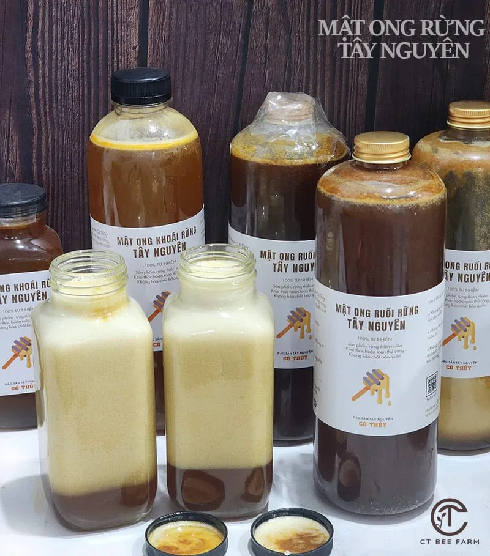
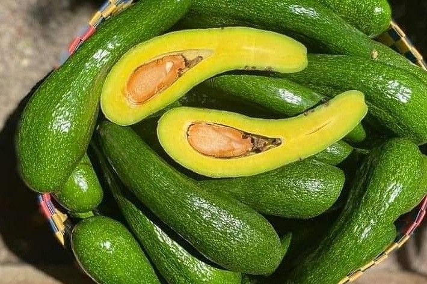
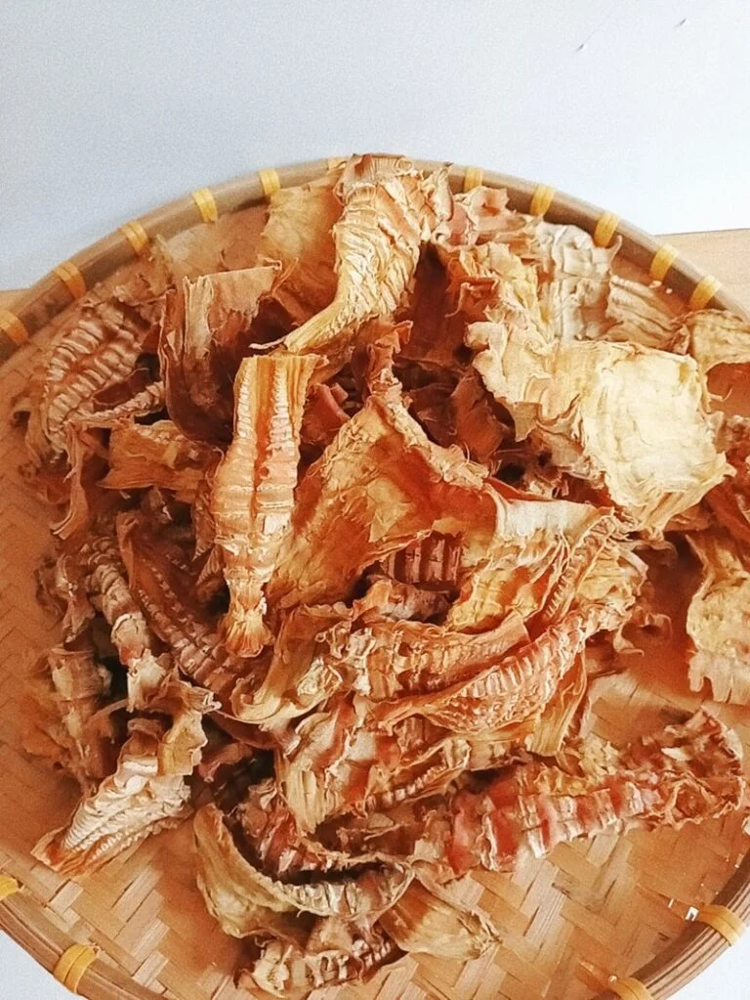
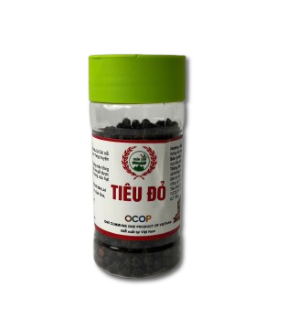

Mật Ong Rừng Tự Nhiên
Mật ong nguyên chất khai thác từ rừng nguyên sinh Tây Nguyên, không pha tạp.
600.000 VNĐ / 1LCà phê Buôn Ma Thuột, mật ong rừng, mắc ca và tiêu Tây Nguyên - thu hoạch theo đơn đặt hàng, giao tận tay, nguồn gốc rõ ràng từ nông dân bản địa.
Những sản phẩm được khách hàng tin chọn nhiều nhất từ vùng đất bazan Tây Nguyên.

Mật ong nguyên chất khai thác từ rừng nguyên sinh Tây Nguyên, không pha tạp.
600.000 VNĐ / 1L
Bơ sáp béo dẻo, hái trực tiếp từ vườn theo đơn đặt hàng.
39.000 VNĐ / 1Kg
Măng rừng phơi khô tự nhiên, giữ trọn vị đậm đà đặc trưng núi rừng.
400.000 VNĐ / 1Kg
Hạt tiêu đỏ chín cây, cay nồng, thơm đặc trưng đất đỏ bazan.
80.000 VNĐ / LọTây Nguyên - vùng đất đỏ bazan trải dài qua Đắk Lắk, Đắk Nông, Gia Lai, Kon Tum và Lâm Đồng - là nơi hội tụ khí hậu cao nguyên mát mẻ và thổ nhưỡng màu mỡ bậc nhất Việt Nam. Từ những vườn cà phê Buôn Ma Thuột trăm tuổi đến những cánh rừng mật ong nguyên sinh, mỗi sản phẩm mang theo câu chuyện của người nông dân bản địa và nhịp sống chậm rãi của núi rừng.
Đặc Sản Tây Nguyên ra đời để đưa những sản phẩm ấy đến gần hơn với người tiêu dùng cả nước, giữ nguyên hương vị gốc và câu chuyện phía sau từng sản phẩm.
Sản phẩm địa phương, thu mua trực tiếp từ nông dân, có thông tin xuất xứ minh bạch.
Không sử dụng thuốc trừ sâu hóa học trong quá trình canh tác và bảo quản.
Sản phẩm tươi mới, thu hoạch và đóng gói sau khi nhận đơn đặt hàng.